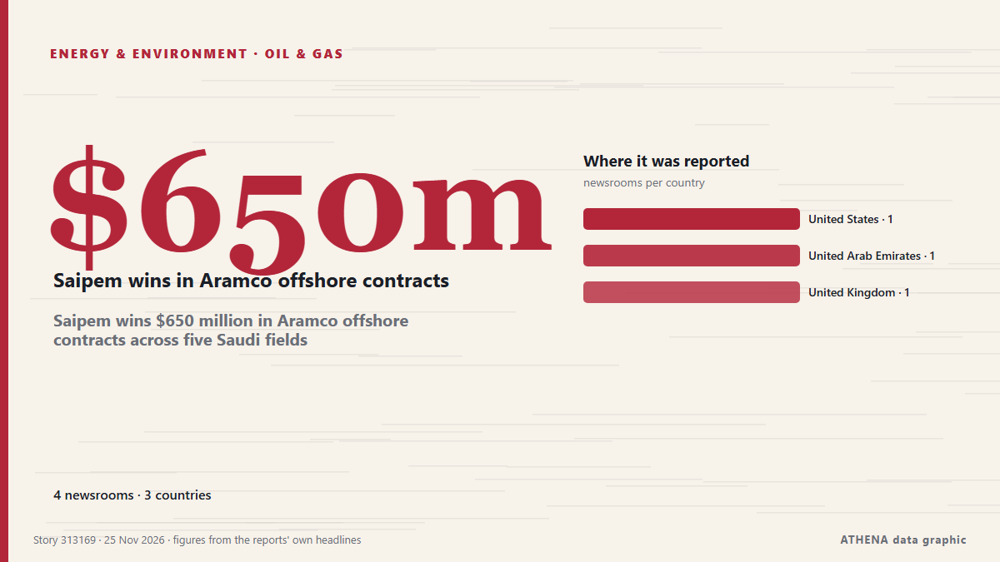

Oil & gas
SponsoredPresented by  Cybernetics and Artificial Intelligence Lab Welcome to the Cybernetics and Artificial Intelligence Laboratory, established at the Department of Business Administration of the National and Kapodistrian University of Athens. The lab is headed by Professor Dimitrios Thomakos. The lab aims to do research that can be published in top venues. Our research uses tools and methods of Artificial Intelligence, and lies in the following areas: - Forecasting - Decision making - Cyber security - Finance We are always looking forward to collaborating with exceptional students!
Cybernetics and Artificial Intelligence Lab Welcome to the Cybernetics and Artificial Intelligence Laboratory, established at the Department of Business Administration of the National and Kapodistrian University of Athens. The lab is headed by Professor Dimitrios Thomakos. The lab aims to do research that can be published in top venues. Our research uses tools and methods of Artificial Intelligence, and lies in the following areas: - Forecasting - Decision making - Cyber security - Finance We are always looking forward to collaborating with exceptional students!
| 13 Nov | 0 |
|---|---|
| 14 Nov | 0 |
| 15 Nov | 0 |
| 16 Nov | 0 |
| 17 Nov | 0 |
| 18 Nov | 0 |
| 19 Nov | 3 |
| 20 Nov | 1 |
| 21 Nov | 1 |
| 22 Nov | 3 |
| 23 Nov | 3 |
| 24 Nov | 8 |
| 25 Nov | 5 |
| 26 Nov | 0 |

Saipem wins $650 million in Aramco offshore contracts across five Saudi fields
Saipem has won two Aramco offshore contracts worth about $650 million, covering seven production deck manifolds, about 39 km of pipeline and 41 km of power cable across the Marjan, Safaniya, Manifa… from World Oil
China, India set for record Russian oil imports in 2026
China and India are on track for record Russian oil imports this year, plugging a supply gap caused by the Iran war, as US sanctions waivers eased purchases and Ukrainian drone attacks knocked out… from Business Recorder
TotalEnergies strengthens its partnership with Continental Resources to develop its gas production
TotalEnergies has signed a new agreement with Continental Resources, under which TotalEnergies acquires interests in natural gas upstream assets. from Cyprus Shipping News
Army plan to detonate lead azide in Iowa 'insane': Attorney
An attorney representing victims of the Sept. from The Hill
Iraq PM sacks senior officials over oil smuggling scandal
Iraq's prime minister has sacked senior officials over an oil smuggling investigation and ordered tighter federal control over Kurdistan's oil exports. from The New Arab
Motor Oil EBITDA Tops €2 Billion, Net Debt Drops To €420 Million
Motor Oil reported nine-month 2026 net profit of €1.388 billion, up from €451 million, and plans €420 million in investment for the full year. from To Vima (English)
Putin Calls for More Oil Refining in Siberia, Russia’s Far East
Russian President Vladimir Putin on Tuesday told a meeting of his fuel and energy commission that Russia must develop oil refining in Siberia and the Far East. from Kyiv Post
Iraqi PM orders ministry to manage oilfields in areas under Kurdish control
BAGHDAD, Nov 24 - Iraq's prime minister has ordered the energy ministry to manage oilfields in areas under Kurdish control, in a move likely to further strain relations with the semi-autonomous… from The Straits Times
Oil slips over 1% as supply glut prospect offsets Middle East disruption fears
Brent crude futures drop $1.35, or 1.5%, to $90.05 a barrel. from Express Tribune
Vitol to Start Construction on $2.3b South African LNG Project in 2028
A consortium led by Vitol's Engen unit expects to begin construction of a 40 billion rand ($2.3 billion) integrated LNG-to-power project in South Africa late in 2028, the global commodities trader… from MarineLink
DEME Lands Offshore Works Contract for Canadian Gas Pipeline
Belgian marine engineering company DEME has secured a major subcontract from Allseas for marine construction works on the Prince Rupert Gas Transmission (PRGT) pipeline project in British Columbia… from Offshore Engineer
Oil holds near three-month low as rising supply offsets Hormuz threat
Oil prices eased Tuesday, hovering near a three-month low amid concerns about rising crude supply and a potential market surplus, while risk to shipping through the Strait of Hormuz persisted. from MyJoyOnline
Samsung and DNV team up on nuclear-powered LNG carrier
Samsung Heavy Industries, Tesser Atomics, NTNU and DNV to develop nuclear-powered LNG carrier concept for transatlantic trade. from Seatrade Maritime
Pakistan, Oman sign petroleum products supply agreement
Pakistan and Oman have signed an agreement for the purchase and sale of petroleum products between Pakistan State Oil (PSO) and Oman’s OQ Trading. from Business Recorder
Energy Oman, ExxonMobil to develop Greater Makarem gas, Duqm LNG
MUSCAT: The Government of the Sultanate of Oman signed on November 19, 2026, a concession agreement with Energy Development Oman (Energy Oman) and US energy supermjaor ExxonMobil t... from Oman Observer
Argentina approves RIGI investment scheme for YPF’s LNG project
Argentina has approved the inclusion of the YPF-led Argentina LNG project in the country's RIGI investment incentive regime, according to Energy Minister Luis Caputo. from LNG Prime
Libya’s Oil Output Plunges as Armed Groups Shut Key Pipelines
Libya’s oil production has crashed by about 350,000 barrels per day (bpd) after an outlaw group closed a valve on the pipeline transporting crude oil from Sharara, the country’s biggest oilfield, the… from OilPrice.com
Drone attack reported on Kaleykino oil pumping station in Russia's Tatarstan
Residents of Almetyevsk in Russia's Tatarstan region recorded flashes near the village of Kaleykino, where an oil pumping station of the Russian trunk oil pipeline system of the same name is located. from Ukrinform (English)
Korea asks Qatar to prioritize LNG supplies once production, shipping normalize
Industry Minister Kim Jung-kwan on Monday requested that Qatar give priority to supplying liquefied natural gas (LNG) to Korea when Qatari LNG production and navigation through the Strait of Hormuz… from The Korea Times